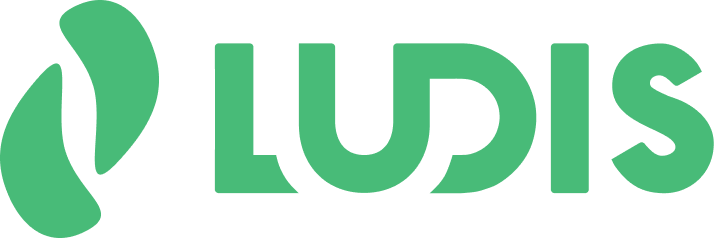
LUDIS is a mobile playbook for amateur and youth sports teams — a tactical canvas where coaches draw plays with role-based player symbols and movement routes, save them to a reusable playbook, and take them to the field offline or as an exported PDF. It's built for coaches who double as team managers, have no formal management training, and are priced out of professional sports software.
arrow_downwardHow I did it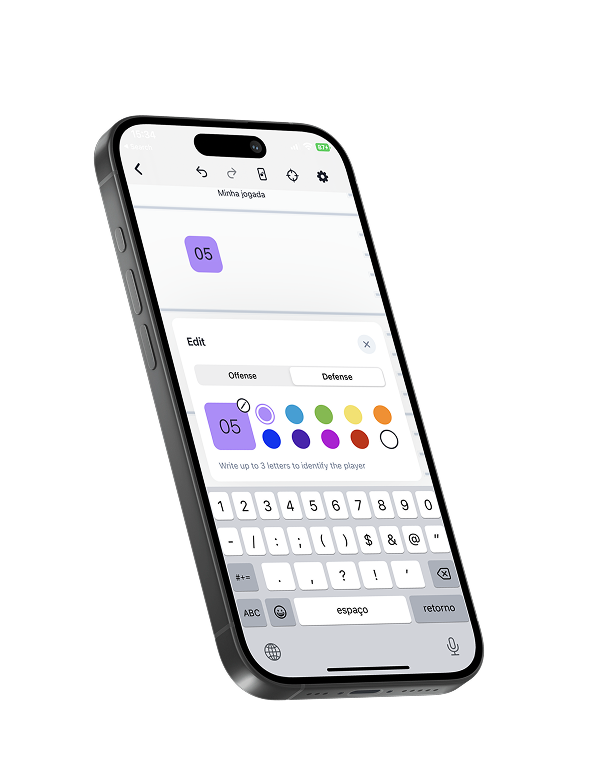

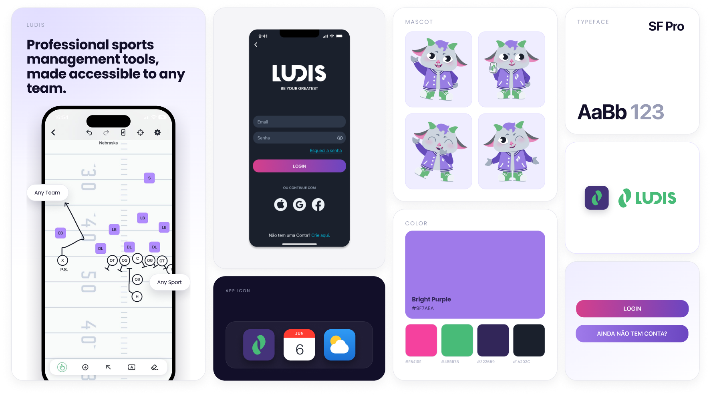
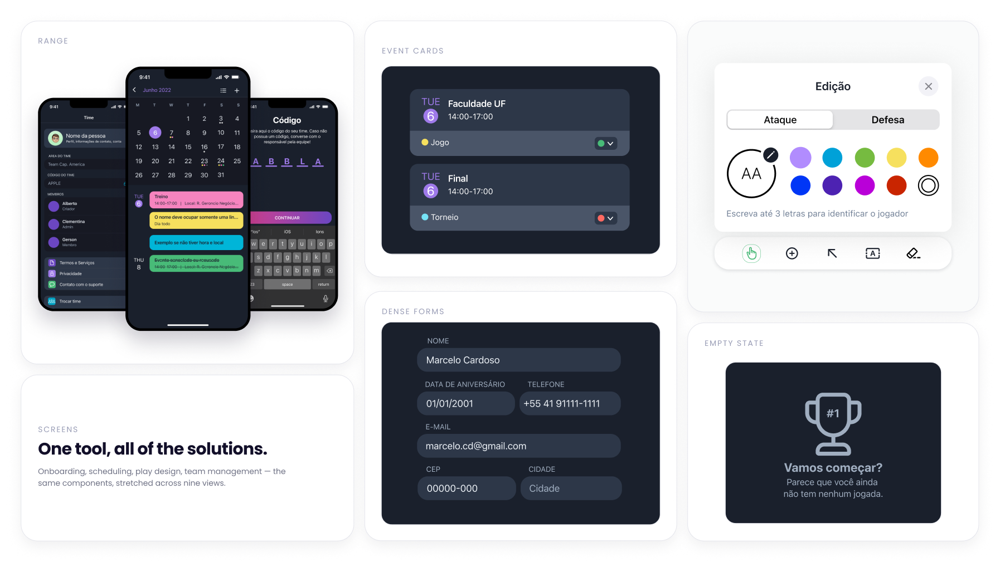
Key responsibilities
Team of three · one developer, two designers.
Owned research, wireframing, usability testing, and launch strategy.
The design system was led
by Natalia Da Rosa
UX research
Benchmarking, interview scripts, usability testing.
Design
Low-to-high fidelity wireframes and flows, in Figma, against Apple's HIG
Go-to-market
Launch strategy, three paid campaigns, and promotional content
Methodology
Apple's CBL (Challenge Based Learning)A three-phase framework connecting problem definition, research, and execution.

01 · Engage
- How to improve an athlete's experience with Sports Management?
- Seek to optimize and make professional Sports Management more accessible.
02 · Investigate
Understanding who we were building for.

03 · Act
Turning insight into product.
Problem & Audience
Youth and amateur sports teams struggle to organize training, matches, and team data — and the tools available don't fit them. Existing sports management apps tend to be inaccessible, expensive, or built for a narrow slice of the market, which leaves most coaches without a real option — especially the ones also acting as team managers, juggling both roles with no tooling built for that reality.

Primary user: coaches and sports teachers, often with little to no formal management experience
Secondary user: athletes and team members, typically younger.
Creating our solution
UX shaped Ludis from day one — research fed directly into wireframes, taken from low to high fidelity, refined through user flows built jointly by designers and developers, and grounded throughout in Apple's Human Interface Guidelines.
The Key Decision
The original vision for Ludis was broad — scheduling, communication, and performance tracking across any sport. After our first round of validation, we decided that reducing our scope would be the best option given the time we had and the goals we still wanted to achieve.
We scoped the MVP down to one main feature: the play-drawing playbook.

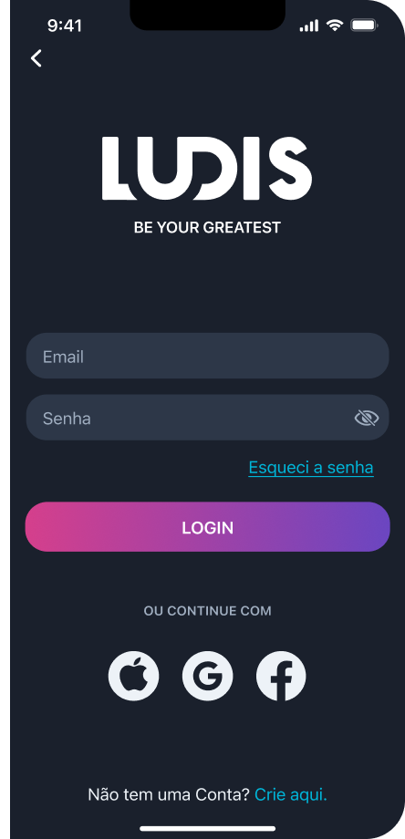
Slide for before and after
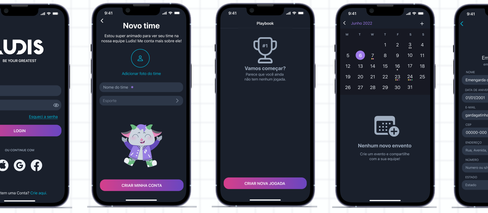
User validation
We ran a moderated usability test with the same initial users, then returned to that feedback for a second round of iteration. Ease of use scored 5/5, likelihood to recommend scored 5/5 — and the session surfaced real gaps we shipped before release:
Multi-Sport Templates
Added soccer, volleyball, and basketball
Custom Backgrounds
Added the ability to upload images to serve as custom backgrounds
Offline & Export
Allowed users to save locally, with shareable images or PDFs
This wasn't just fixing friction — it was expanding the product in the direction users actually asked for, based on evidence instead of assumption. Bellow, you can find the interview protocol we used for our validation process.
view interview protocol
The Solution in Practice
Login & team setup → Playbook list → Play-drawing canvas: choose a template for your sport (football, soccer, or volleyball) or a custom background, add players with role-based symbols (shape, not just color, for accessibility), draw routes with directional lines, and save to a reusable playbook — available offline, with export to image or PDF for sharing on the field.

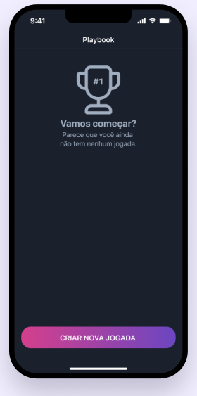

Result & Reflection
in week one
one
content produced
in-house
LUDIS launched successfully and served its community goal, built through a user-focused, metric-driven process. But our research only ever confirmed us — it never pushed back. What looked like validation then reads now as a blind spot: research that can't contradict you isn't testing your assumptions, it's just recording them. Next time I'd design the study to be able to prove me wrong.
To learn more about our marketing and launch campaign, view my separate project on LUDIS' social media design.
view LUDIS' marketing projectIf you'd like to poke around, LUDIS is live on the App Store. It's free, and drawing your first play takes only a few minutes.
download LUDIS

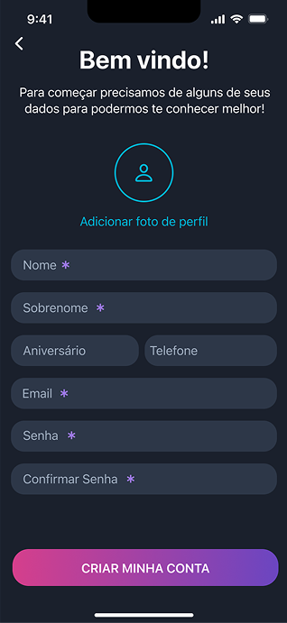
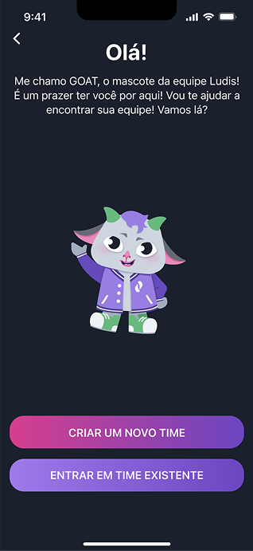

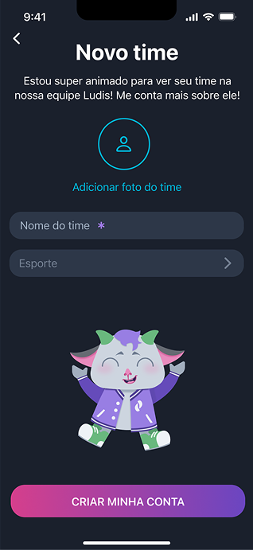
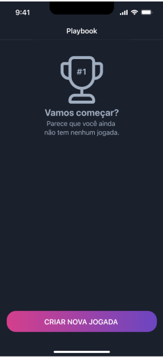
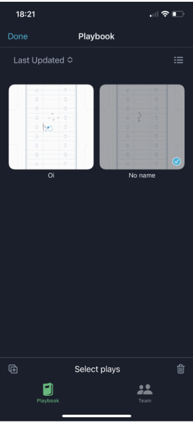

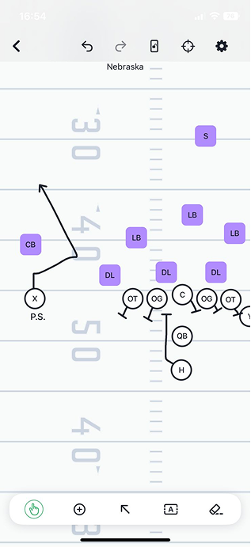


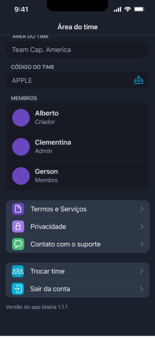
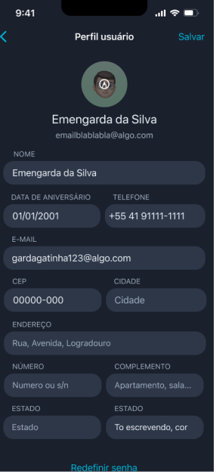
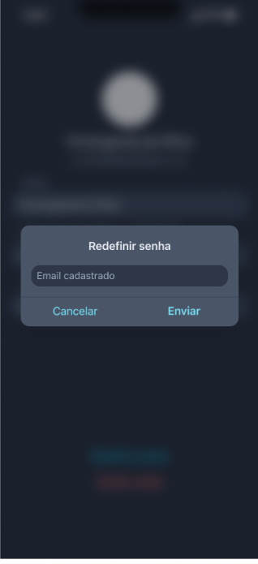

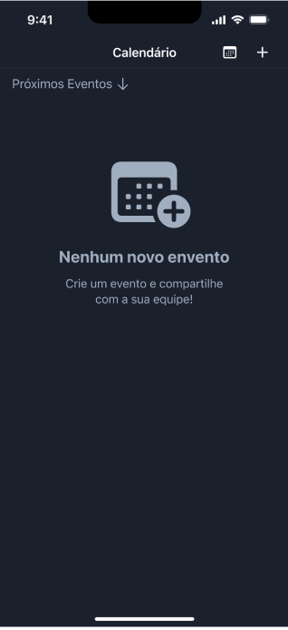


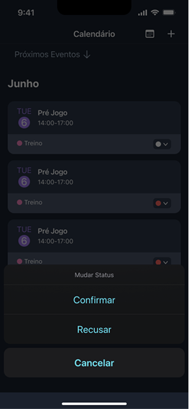